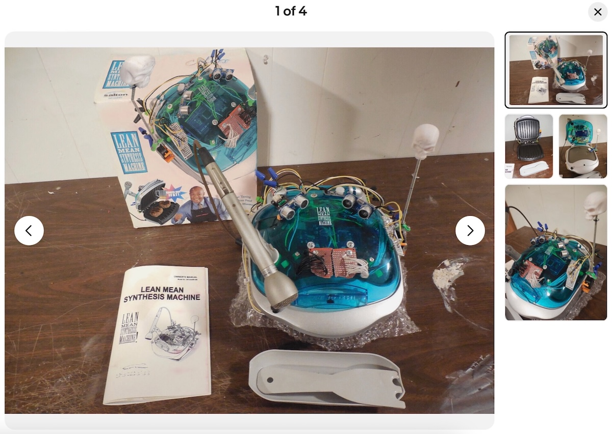
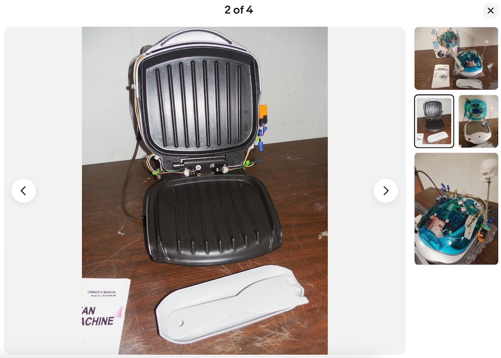
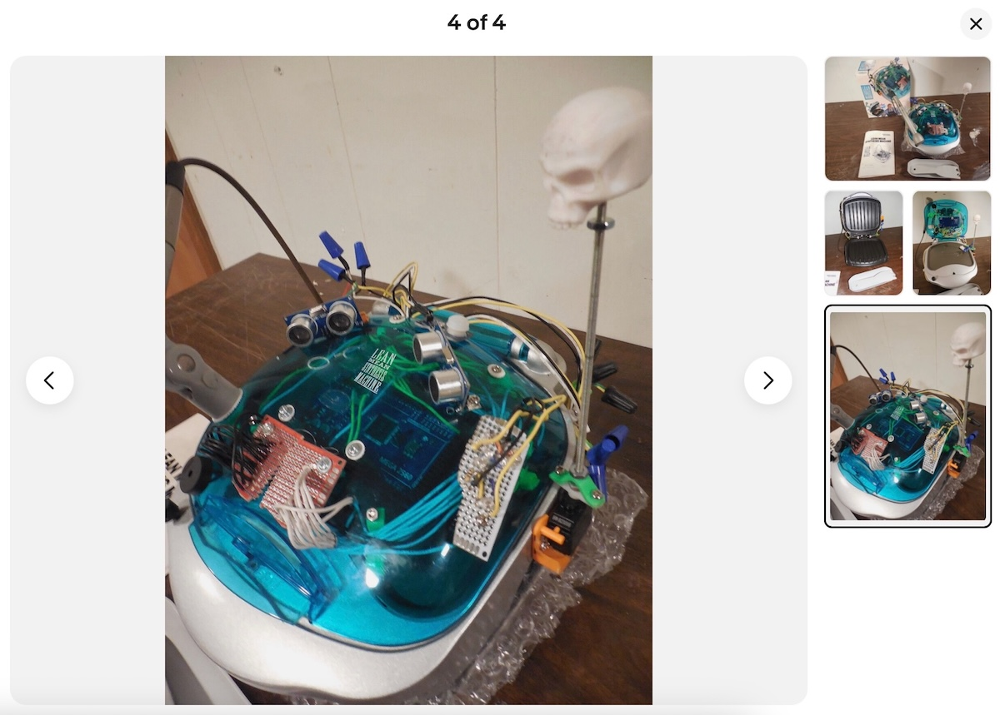
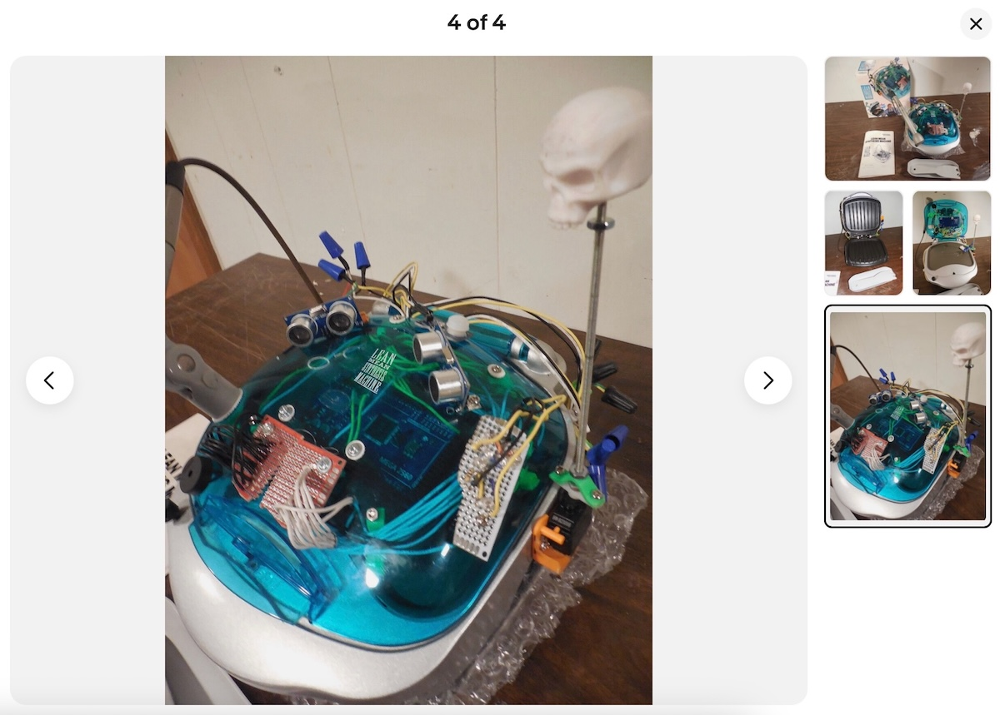
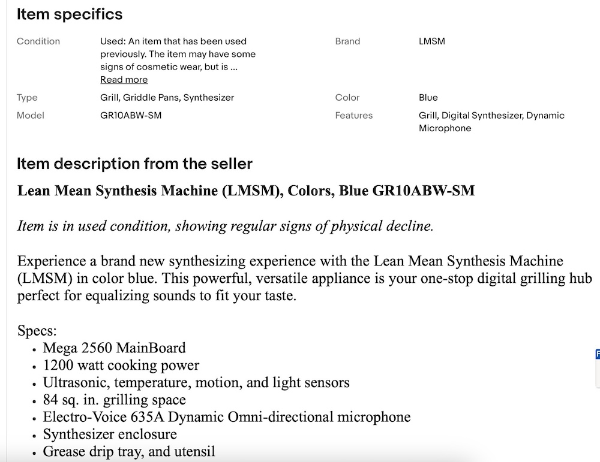
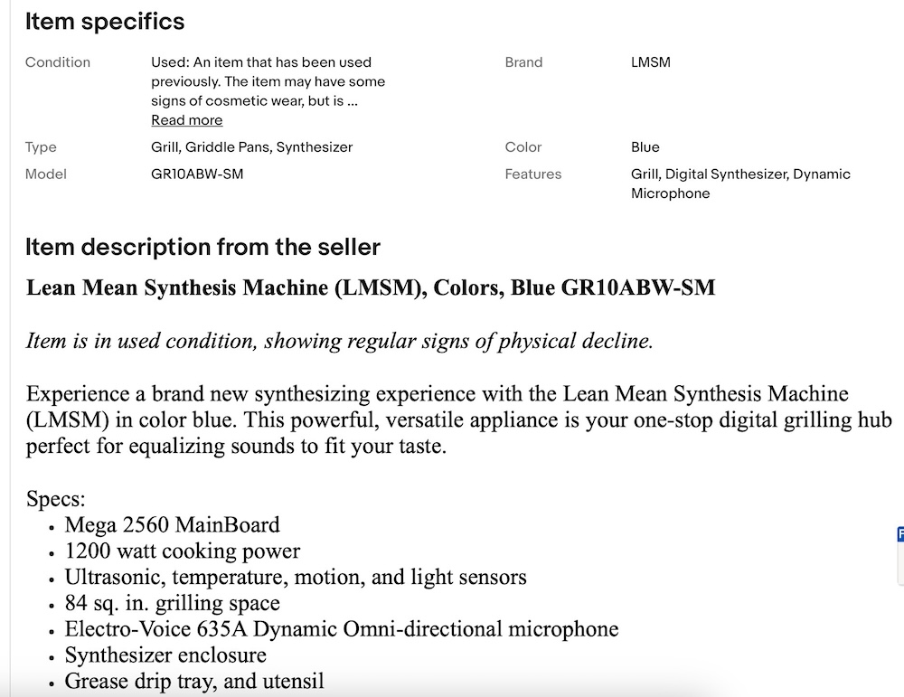

Lean Mean Synthesis Machine (LMSM)
Lean Mean Synthesis Machine is a George Foreman synthesizer built by artist Doug MacDowell
Description: A George Foreman synthesizer posted, and not sold on eBay. The label "synthesizer" is used loosely here. This machine, whatever it is, functions as a George Foreman Grill (it even has a bun warmer) and is fitted with an Arduino Mega and 6 sensors that collect temperature, humidity, movement, etc., a microphone, and piezos that create audible beeps and boops from the sensors. The attached skull rotates, and makes eerie eye contact with you as a servo motor reacts to the ultrasonic sensors on top of the machine. I made a video of the Lean Mean Synthesizing machine in use - check it out here or at the end of this page.
↓↓↓↓↓ Jump to see the synth in an experiemental video
  

 

Video: Watch the Lean Mean Synthesis Machine in action — making a BLT with plastic hands in this experimental video.